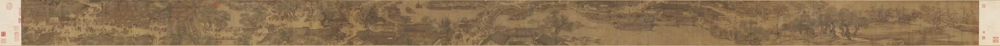

Unrolling the scroll…
The picture is the Palace Museum scroll, from the public-domain scan “Alongtheriver_QingMing.jpg” on Wikimedia Commons (38,414 × 1,800 pixels). The ripples on the water, the mist and the shading around each subject are drawn live over it and are not part of the painting. So is the movement: figures, boats and trees are parts of the scan nudged a few pixels at a time, and the birds were drawn for this page. Distances are measured from the scroll’s right end, where reading starts.
Where the text gives an interpretation (the willow party returning from the graves, the unguarded gate), it is one reading among several.
Keyboard: ← next scene, → previous scene.
This scroll needs JavaScript and WebGL 2 to unroll.